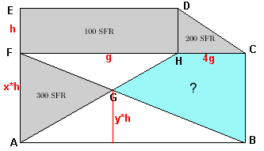

Lösung PUZZLE 17: Die ungenaue Grundstückzeichnung
Rechteck FHDE: Länge g , Höhe h, also
g*h =100. Dann muss die Grundlinie des Dreiecks HCD (wegen Inhalt 200) 4g sein.
Bezeichnet man nun die Grundlinie (die Vertikale links) des Dreiecks AGF als x*h, die Höhe des Dreiecks ABG
(das Grundlinie 5g hat) mit y*h, dann ist die Höhe des Dreiecks FGH mit Grundlinie FH (x-y)*h. Für die
zwei Unbekannten x und y gilt:
ΔAHF: g*x*h/2 = 300 + g*(x-y)*h/2
Auflösen dieser Gleichung (g*x*h/2 fällt auf beiden Seiten weg!) liefert (mit g*h=100): y = 6.
Daher beträgt der Inhalt des Dreiecks ABG = 5g*y*h/2 = 1500.
Damit gilt im ΔABF: 5g*x*h/2 = 300 + 1500 = 1800, also x = 7.2.
Die blau markierte Fläche (Inhalt = Inhalt ΔFBC - Inhalt ΔFGH) berechnet sich so zu 1800 - 1.2g*h/2 = 1740.
Bauer Egli muss also für das blau markierte Grundstück Fr. 1740.- bezahlen.